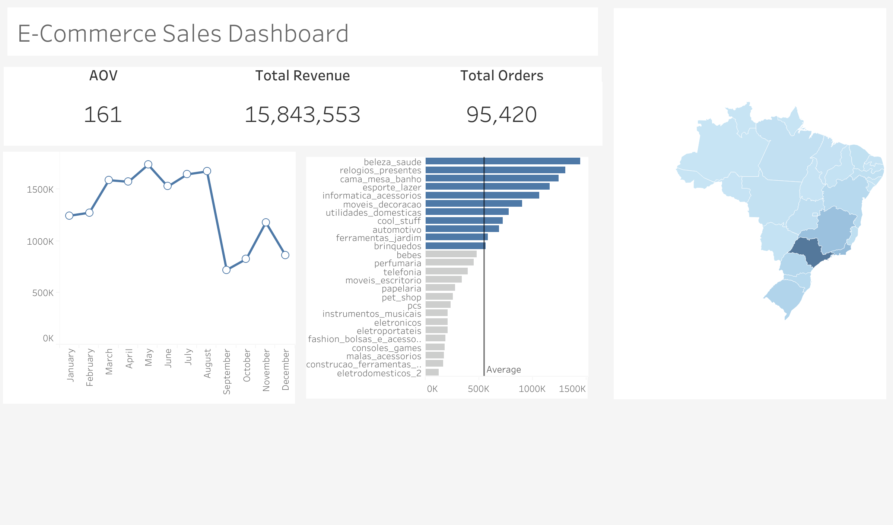

Olist E-Commerce Sales Analysis
End-to-end e-commerce analytics on the Olist dataset using SQL and Tableau. Uncovered revenue trends, customer behavior, and regional sales performance across 95K+ orders.
Business Impact: Identified top product categories driving 80% of revenue and seasonal patterns for inventory planning.
SQLPythonTableauPandas
View on GitHub